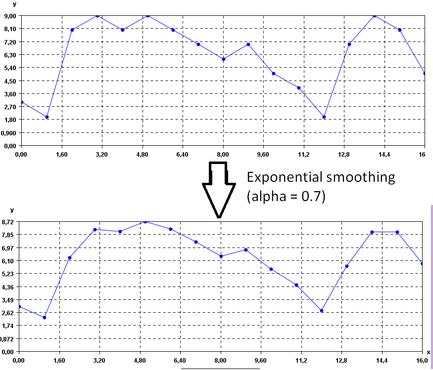
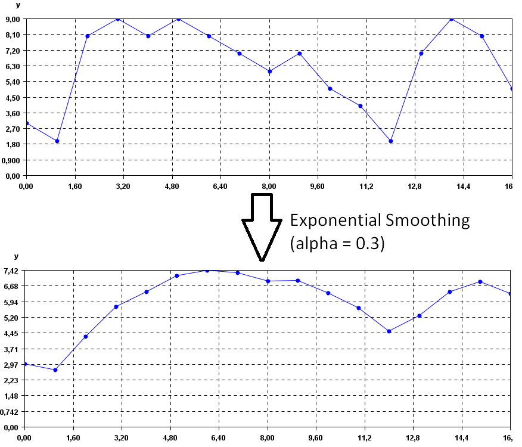

Calculate exponential smoothing of time series (SPMF documentation)
This example explains how to calculate the exponential smoothing of a time series using the SPMF open-source data mining library.
How to run this example?
- If you are using the graphical interface, (1) choose the "Calculate_exponential_smoothing_of_time_series" algorithm, (2) select the input file "contextMovingAverage.txt", (3) set the separator to the comma ',' (4) set alpha to 0.7, and then (5) click "Run algorithm".
- If you want to execute this example from the command line,
then execute this command:
java -jar spmf.jar run Calculate_exponential_smoothing_of_time_series contextMovingAverage.txt output.txt 0.7 ,
in a folder containing spmf.jar and the example input file contextMovingAverage.txt. - If you are using the source code version of SPMF, to run respectively this example, launch the file "MainTestExponentialSmoothingFromFileToFile.java"in the package ca.pfv.SPMF.tests.
What is the calculation of the exponential smoothing of a time series?
Calculating the exponential smoothing of a time series is a simple but popular way of smoothing a time series to remove noise. It takes as parameter a smoothing parameter called "alpha", which must be set in the [0,1] interval. Then, for a time series, it replaces the i-th data point Y_i by Y'_i = alpha * Y_i + (1 - alpha) * Y'_(i-1). The parameter alpha represents the influence of the previous data point on the following point. If alpha is set to 0, then all the time series will be equal to the first point of the time series. If alpha is set to 1, then the times series will remain the same.
What is the input of this algorithm?
The input is one or more time series. A time series is a sequence of floating-point decimal numbers (double values). A time-series can also have a name (a string).
Time series are used in many applications. An example of time series is the price of a stock on the stock market over time. Another example is a sequence of temperature readings collected using sensors.
For this example, consider the following time series:
| Name | Data points |
| ECG1 | 3,2,8,9,8,9,8,7,6,7,5,4,2,7,9,8,5 |
This example time series database is provided in the file contextMovingAverage.txt of the SPMF distribution.
In SPMF, to read a time-series file, it is necessary to indicate the "separator", which is the character used to separate data points in the input file. In this example, the "separator" is the comma ',' symbol.
To calculate the exponential smoothing of a time series, it is necessary to provide a smoothing parameter "alpha", which is a floating point number in the [0,1] interval. In this example, this parameter will be set to 0.7.
What is the output?
The output is the exponential smoothing of the time series received as input. The exponential smoothing is calculated by replacing the i-th data point Y_i by Y'_i = alpha * Y_i + (1 - alpha) * Y'_(i-1).
For example, in the above example, if the alpha parameter is set to 0.7, the result is:
| Name | Data points |
| ECG2_EXPSTHG | 3.0,2.3,6.29,8.187,8.0561,8.71683,8.215049,7.3645147,6.40935441,6.822806323,5.5468418969,4.464052569070001,2.7392157707210005,5.721764731216299,8.01652941936489,8.004958825809467,5.90148764774284 |
To see the result visually, it is possible to use the SPMF time series viewer, described in another example of this documentation. Here is the original time series (top) and the exponential smoothing obtained for alpha = 0.3 (bottom)

It is possible to see that the time series is less noisy. Here is another example with alpha = 0.3:

Input file format
The input file format is defined as follows. It is a text file. The text file contains one or more time series. Each time series is represented by two lines in the input file. The first line contains the string "@NAME=" followed by the name of the time series. The second line is a list of data points, where data points are floating-point decimal numbers separated by a separator character (here the ',' symbol).
For example, the input file of the previous example, named contextMovingAverage.txt is defined as follows:
@NAME=ECG2
3,2,8,9,8,9,8,7,6,7,5,4,2,7,9,8,5
Consider the first two lines. It indicates that the first time series name is "ECG2" and that it consits of the data points: 3,2,8,9,8,9,8,7,6,7,5,4,2,7,9,8, and 5. Then, three other time series are provided in the same file, which follows the same format.
But note that it is possible to have more than one time series per file. For example, this is another input file called contextSax.txt, which contains 4 time series.
@NAME=ECG1
1,2,3,4,5,6,7,8,9,10
@NAME=ECG2
1.5,2.5,10,9,8,7,6,5
@NAME=ECG3
-1,-2,-3,-4,-5
@NAME=ECG4
-2.0,-3.0,-4.0,-5.0,-6.0
Output file format
The output file format is the same as the input format. For example, there is the result for window = 3:
@NAME=ECG2_EXPSTHG
3.0,2.3,6.29,8.187,8.0561,8.71683,8.215049,7.3645147,6.40935441,6.822806323,5.5468418969,4.464052569070001,2.7392157707210005,5.721764731216299,8.01652941936489,8.004958825809467,5.90148764774284
Notes
There exists other operations to smooth a time series that are offered in SPMF such as the moving average.
Where can I get more information about the prior moving average?
The exponential smoothing is a basic operation for analyzing time series. It is described in many websites and books.